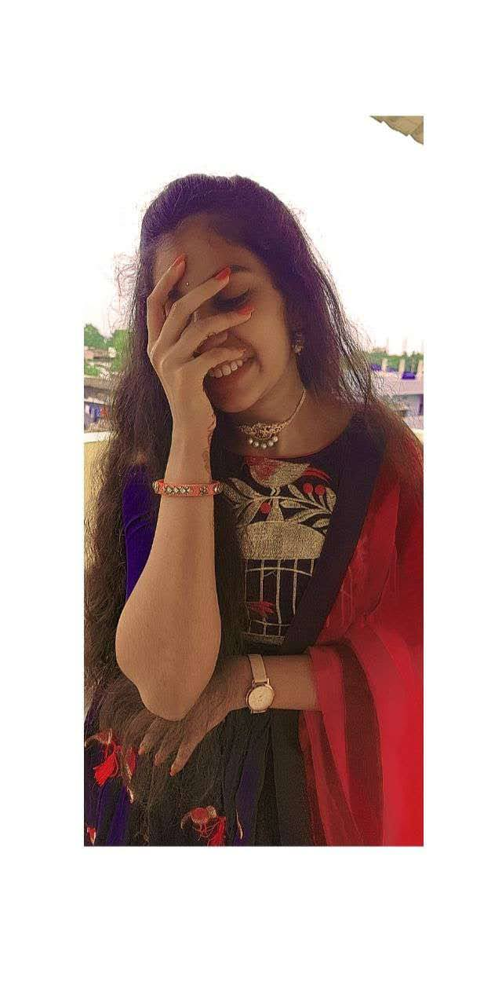
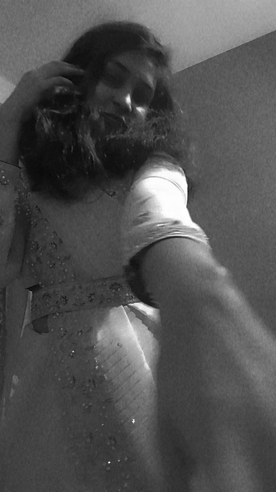
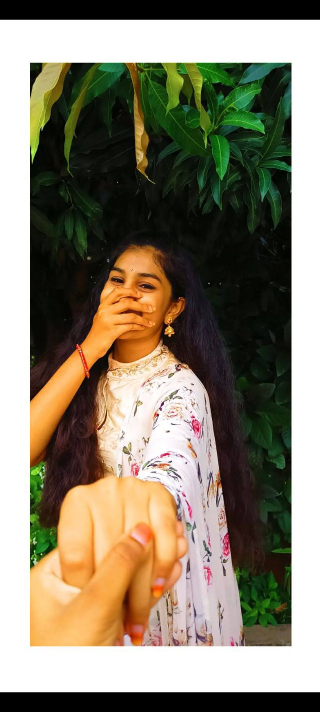

ela start cheyalo or ela cheppalo teliyatledu anyway happiest birthday my most precious one💕. Appude nek 19yrs ochesai ra, lock down lo parchayam ayyavu annayya ani msg chesavu, chala important aipoyavu. Ala neetho years pass ayyayi chala love and care choopinchavu💛
u r the best one ra. Yeppudu ala navvuthu undu ra, ni smile chala baguntundi. Neetho spend chesina every moment oka manchi memory ra🧡 "Ala ani yekkuva smile cheyaku ra distti thakkuthadi😸jk"

Enno sarlu rakhi roju rakhi kadthavu anukune vaadini but okasari kuda avvaledu kani oka rakhi roju kuda miss cheyale nannu wish cheyadam, na paina entha kopam unna avvi anni pakkaki petti wish chesavu🥺

na kosam oka gift 5yr dachipettavu chudu I can feel how I am being mean to you have always been my frst priority.
No matter how many mistakes I’ve made, my love and respect for you will never change. You’ve always been my strength, my comfort, and my safe place. Even when I fail, I know you’ll always be the one who truly understands me.
You were the one who cared for me when no one else did, the one who made sure I never felt alone. Every little act of love from u still lives in my heart, and I realize now how deeply I needed it, how much I need u even today.

You always felt my pain even when I didn’t say a word, and you stood by me when I couldn’t stand for myself. That kind of care is rare, and I will never forget how much you gave without expecting anything in return.
Happy Birthday to the sweetest sister in the world! 🎂✨ You are my biggest blessing, my endless joy, and the one I’ll love not just for today, but for forever — to infinity and beyond. May your heart always shine as bright as your smile." 💖 "Love you from the moon to the stars and beyond 🤗💕".